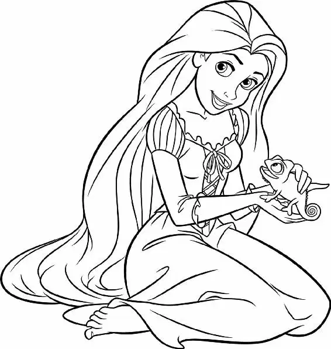

Every thug in the room eyed the reward mentioned on the poster. All heads turned in Flynn’s direction with a keen interest.
“It’s him, all right,” one thug said. “Greno, go find some guards.”
“That reward’s gonna buy me a new hook,” a one-armed thug said, licking his chops.
The bartender grabbed Flynn. “I could use the money,” he said.
“What about me?” another thug interrupted. “I’m broke.”
A brawl quickly ensued, with bottles crashing and chairs flying. Everyone was pulling at Flynn. Pascal and Rapunzel ducked and cringed, terrified.
“Please!” Flynn squealed from under the pile of filthy men. “We can work this out!” But the only replies were grunts, shouts, and growls.
Rapunzel tried to help. She raised her frying pan and spoke up. “Um, excuse me? Ruffians?” she said.
“Gentlemen! Please!” Flynn cried as one of his arms was twisted behind his back and his knee was jammed into a table.
“Is it possible to just get my guide back?” Rapunzel shouted. She poked one of the thugs with her pan. “Just stop. Stop!” Nothing happened.
Rapunzel looked around. She saw a large table and jumped on top of it. It was time to take action! She whacked her pan against a giant pot hanging from the ceiling. CLANG! Then, with all her might, she yelled, “PUT HIM DOWN!”
For a moment, there was absolute silence. Every thug in the tavern stopped what he was doing and stared at the young woman.
Rapunzel took a breath. “Okay,” she said to the rabid mob, “I don’t know where I am, and I need him to take me to see the lanterns because I’ve been dreaming about them my entire life! Find your humanity!” she pleaded. “Haven’t you ever had a dream?”
Flynn cringed. A dream? Did she really want to talk about dreams with this crowd? His heart sank. He was definitely going to end up with a broken nose.
Then the thug with a hook for a hand moved toward Rapunzel with a menacing look. Rapunzel froze.
“I had a dream once,” the brute said softly. He tossed aside his axe and told Rapunzel that he’d dreamed of being a pianist. Finding a small piano, he began to play.
A burly thug covered in bumps and bruises took the opportunity to tell Rapunzel about his dream. He handed her a flower. He wanted to fall in love! Rapunzel patted his hand.
Flynn was becoming more and more interested. What was up with this young woman, anyway? He watched as the tavern thugs turned to mush, weeping and sweetly telling Rapunzel about their dreams. They confessed to wanting to become everything from florists to ballet dancers. And all the while, her faithful chameleon, Pascal, sat on her shoulder, protectively looking out for her. Everyone seemed to adore her!
Unfortunately, something terribly serious was happening outside.
Mother Gothel had tracked Rapunzel and Flynn to the Snuggly Duckling. When she looked through the window, she was stunned. Rapunzel was happily mingling with those thugs! Mother Gothel felt her world crumbling around her. Without Rapunzel locked away in that tower — without the girl’s magical hair — Mother Gothel’s life would come to an abrupt end as she quickly aged. She had to do something to stop the naive girl!
Inside, the crowd finally turned to Flynn Rider. “What about you?” the man with the hook for a hand asked. “What’s your dream?”
Desperately hoping his answer would be enough, Flynn told them about his dream of living on his own island. The thugs roared their approval and tossed Flynn in the air.
“I have one, too!” Rapunzel shouted. She knew she could trust these men with her dream. “I want to see the floating lanterns more than anything in the world!” She described how wonderful it felt — to her surprise — to be outside the tower. She was learning more and more with each passing minute, and she loved the sights she was seeing, the sounds she was hearing, and the people she was meeting.
The thugs cheered.
Outside, spying through the window, Mother Gothel controlled herself. She had to focus her energies on formulating a plan to get Rapunzel back to the tower.
Hearing a noise behind her, she swiftly ducked into the shadows. A group of angry palace guards raced past her and burst into the Snuggly Duckling.
